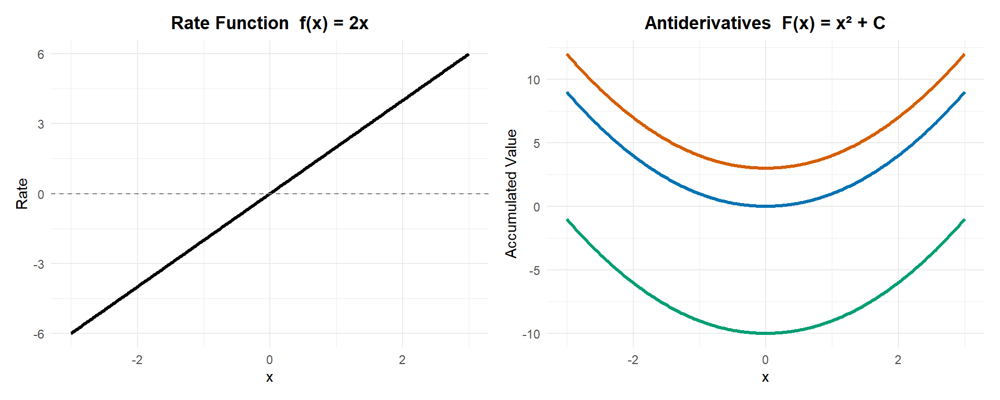
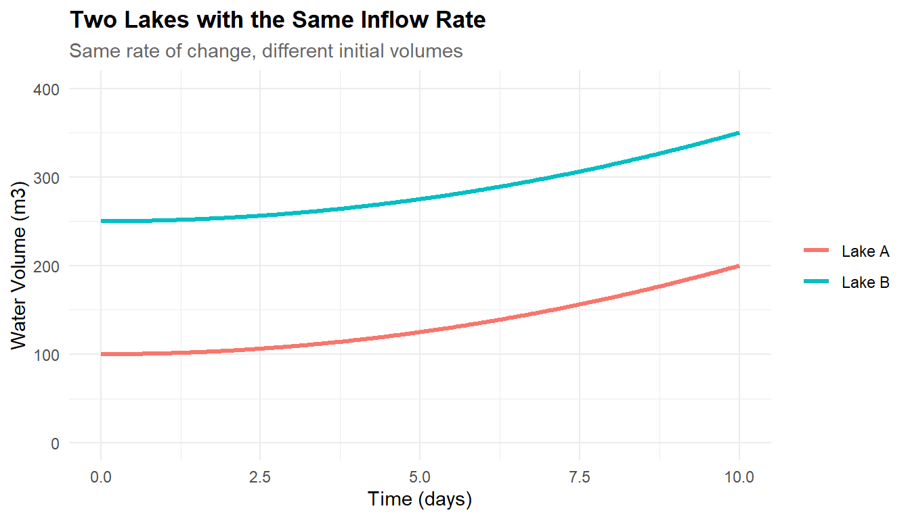

Chapter 5 Techniques of Integration (Indefinite Integrals)
The Fundamental Theorem turns any definite integral into “find an antiderivative, evaluate, subtract.” That only helps if you can find the antiderivative, and that’s where integration gets harder than differentiation. Differentiation has a recipe you can grind through. Integration doesn’t. What you build instead is pattern recognition: spotting when an integrand is a chain rule in disguise, a product, or a fraction that can be split apart.
5.1 Purpose of the Chapter
Chapter 4 showed what a definite integral means and why antiderivatives compute it. This chapter is about how to find antiderivatives when they aren’t obvious.
By the end of this chapter, you should be able to:
- compute indefinite integrals with the basic rules
- recognize when to use substitution, integration by parts or partial fractions
- connect each technique back to a derivative rule (chain rule, product rule)
- check your answer by differentiating it
5.2 Indefinite Integrals and the Constant of Integration
A definite integral has bounds, and its answer is a number: the net change between \(a\) and \(b\). Take the bounds away and you’re asking a different question: which functions have this rate of change?
A definite integral \[ \int_a^b f(x)\,dx \] asks: how much changed between \(x=a\) and \(x=b\)?
An indefinite integral \[ \int f(x)\,dx \] asks: which functions have derivative \(f(x)\)?
Without bounds, the answer isn’t a number any more. It’s a function, and because there’s no starting point, it’s really a whole family of functions: \[ \int f(x)\,dx = F(x) + C, \] where \(F'(x) = f(x)\).
5.2.1 Integrals as Families of Functions
Consider the rate function: \[ f(x) = 2x. \]
Any of the following functions has derivative \(2x\): \[ x^2,\quad x^2 + 3,\quad x^2 - 10,\quad x^2 + C. \]

A derivative only describes slopes. All the curves on the right have the same slope at the same \(x\). They just start at different heights, and adding a constant doesn’t change a slope. That missing starting value is the constant \(C\).
5.2.2 Antiderivatives and the “+ C”
An antiderivative of \(f(x)\) is any function whose derivative is \(f(x)\). Since the derivative of a constant is zero, \[ \frac{d}{dx}\big(F(x) + C\big) = F'(x) + 0 = F'(x). \] So every antiderivative comes with a “+ C”.
That isn’t a flaw. If \(f\) is a rate (carbon flux, inflow to a reservoir, population growth), the amount at any time depends on where you started: how much carbon was already there, how full the reservoir was, how big the population was. Different starting points give different curves with the same rate. The \(+C\) is how the math keeps track of that.
Example: Two Lakes with the Same Inflow
Two lakes get water at the same rate: \[ f(t) = 2t \quad \text{(m³/day)}, \] where \(t\) is time in days. Integrating gives \[ V(t) = t^2 + C, \] where \(V(t)\) is the volume in the lake and \(C\) is the volume at \(t = 0\).
- Lake A starts with 100 m³: \(V_A(t) = t^2 + 100\)
- Lake B starts with 250 m³: \(V_B(t) = t^2 + 250\)
Same rate, so same shape. Different starting volumes, so one curve sits 150 m³ above the other.

The rate sets the shape of the curve. The starting condition sets its height.5.2.2.1 Leaving Out \(C\)
Dropping the \(+C\) is the same as assuming the system started at zero. That’s rarely true unless the problem says so.
5.2.2.2 Why \(C\) Cancels in Definite Integrals
In a definite integral the constant shows up twice and cancels: \[ (F(b) + C) - (F(a) + C) = F(b) - F(a). \] A definite integral measures change between two points, so the starting level doesn’t matter. An indefinite integral describes the amount itself, so it does.
5.3 Reverse Differentiation as a Skill
Most of the time in environmental work you know a rate (how fast a contaminant is decaying, how fast a stand is fixing carbon) and you want the amount. Getting from one to the other is antidifferentiation, and most of the rates you’ll meet come from a short list of functions.
Every rule in this section is a derivative rule you already know, run backwards. The skill isn’t memorizing formulas. It’s looking at an integrand and recognizing it as the derivative of something familiar.
5.3.1 The “Antiderivative Dictionary”
Think of it as a dictionary. When you integrate, you’re asking: have I seen this as a derivative before? These are the entries to know cold.
5.3.1.1 Power Rule (in Reverse)
From differentiation: \[ \frac{d}{dx}(x^n) = nx^{n-1} \]
Reversing this: \[ \int x^n \, dx = \frac{x^{n+1}}{n+1} + C \quad (n \neq -1) \]
Examples \[ \int x^4 dx = \frac{x^5}{5} + C \]
\[ \int x^{-3} dx = \frac{x^{-2}}{-2} + C = -\frac{1}{2x^2} + C \]
5.3.1.2 The Special Case: \(x^{-1}\)
The power rule fails when \(n = -1\).
Instead: \[ \int \frac{1}{x}\,dx = \ln|x| + C \]
It comes straight from: \[ \frac{d}{dx}(\ln|x|) = \frac{1}{x} \]
Key recognition trigger:
Any time you see a lone \(1/x\), think logarithm.
5.3.1.3 Exponentials and Logarithms
Exponentials are special because they reproduce themselves under differentiation.
\[ \frac{d}{dx}(e^x) = e^x \]
So: \[ \int e^x dx = e^x + C \]
Similarly: \[ \int a^x dx = \frac{a^x}{\ln a} + C \quad (a > 0, a \neq 1) \]
5.3.1.4 Basic Trigonometric Antiderivatives
These come directly from familiar derivative rules.
| Integrand | Antiderivative |
|---|---|
| \(\cos x\) | \(\sin x + C\) |
| \(\sin x\) | \(-\cos x + C\) |
| \(\sec^2 x\) | \(\tan x + C\) |
| \(\csc^2 x\) | \(-\cot x + C\) |
| \(\sec x \tan x\) | \(\sec x + C\) |
| \(\csc x \cot x\) | \(-\csc x + C\) |
Sign matters.
For sine and cosine in particular, the negative sign is part of the recognition.
5.3.2 Pattern Recognition Over Memorization
Integration is less about remembering formulas than about recognizing them:
- Look at the integrand.
- Ask what derivative it looks like.
- Match the structure, not the symbols.
- Apply the matching reverse rule.
Concept Check: Why Integration Is Harder Than Differentiation
Differentiation has a step-by-step recipe: power rule, chain rule, product rule, and you can grind through anything. Integration doesn’t work that way. Why?
Click to reveal answer
Differentiation is mechanical: every elementary function has a derivative you can build from a few rules. Integration runs the other way. You’re looking for a function with a given derivative, and there’s no recipe that always works. Some innocent-looking integrands, like \(e^{-x^2}\) or \(\sin(x)/x\), don’t have an antiderivative you can write with elementary functions at all. So integration is a set of techniques you try, check and sometimes abandon.
Concept Check: Reading an Integrand as a Derivative
When you spot \(\int 2x\cos(x^2)\,dx\) and immediately think “that’s a chain-rule derivative in disguise”, what specifically are you noticing?
Click to reveal answer
One factor, \(2x\), is exactly the derivative of the inside of the other factor, the \(x^2\) inside the cosine. Differentiating \(\sin(x^2)\) with the chain rule gives \(\cos(x^2)\cdot 2x\), which is your integrand. So an antiderivative is \(\sin(x^2) + C\). The thing to look for: an inner function and its derivative, both present.
5.4 Substitution: When a Function Is Hiding Inside Another
Substitution handles composite rates: a rate that depends on something that’s itself changing. A reaction rate that depends on concentration, which depends on time. An oxygen-uptake rate that depends on temperature, which depends on depth.
Integrals like these are hard because they’re nested, not because they’re complicated. Substitution lets you deal with the inside first. It’s the chain rule in reverse.
5.4.1 The Big Idea: The Chain Rule in Reverse
The chain rule says \[ \frac{d}{dx}\big(F(g(x))\big) = F'(g(x))\,g'(x). \]
So substitution works when the integrand looks like \[ f(g(x))\,g'(x), \] where \(f\) is the derivative of some outer function \(F\). The question to ask:
Do I see a function inside another function, along with (almost) its derivative?
That’s hard to spot at first. It gets easier with practice. Just as important is recognizing when substitution isn’t working, and what that tells you to try instead.
5.4.1.1 Recognizing \(f(g(x))g'(x)\)
Consider: \[ \int (3x^2 + 1)^5 \cdot 6x \, dx. \]
Read it structurally:
- Inner function: \(g(x) = 3x^2 + 1\)
- Outer function: \(F(u) = u^5\)
- Derivative of the inner function: \(g'(x) = 6x\)
This matches the chain rule pattern exactly.
Instead of expanding the fifth power, rename the inner function and the integral gets simple.
5.4.1.2 Why It’s a Change of Variable, Not a Trick
Substitution can feel like a trick when it’s taught as a procedure. It isn’t. You change variables so the integral matches something you already know how to do. The math is the same. Only the variable you’re measuring in changes, the same way you might re-express time-series data in terms of temperature if temperature is what drives the process.
5.4.2 The Mechanics of \(u\)-Substitution
Once the structure is recognized, the mechanics follow a consistent pattern.
5.4.2.1 Step 1: Choose \(u\)
Choose \(u\) to be the inner function.
Example: \[ \int (3x^2 + 1)^5 \cdot 6x \, dx \]
Let: \[ u = 3x^2 + 1. \]
5.4.2.2 Step 2: Convert \(dx\) to \(du\)
Differentiate \(u\): \[ \frac{du}{dx} = 6x \quad \Rightarrow \quad du = 6x\,dx. \]
This step matters more than it looks.
5.4.2.2.1 What \(dx\) Means
An integral starts as a Riemann sum, \[ \sum f(x_i)\,\Delta x, \] where \(f(x_i)\) is the height of each rectangle and \(\Delta x\) is its width. As the widths shrink, the sum becomes \(\int f(x)\,dx\). So \(dx\) is a very thin width measured in \(x\).
When you switch to \(u\), you’re measuring in \(u\) instead. The heights get rewritten in terms of \(u\), and so do the widths. Leave \(dx\) behind and you’re mixing two different rulers.
\(du = 6x\,dx\) tells you how a small step in \(x\) translates into a small step in \(u\). The factor \(6x\) is the conversion between the two rulers. Forget to convert the differential and the integral no longer means what it did.
5.4.3 Why Substitution Works
You’ve turned a composite rate into a simple one by measuring it in terms of the inner quantity first, then translating back to the original variable.
5.4.4 Substitution in Definite Integrals
Substitution works the same way in definite integrals, with one shortcut: you can change the bounds instead of substituting back.
5.4.4.1 Changing the Bounds
Example: \[ \int_0^2 (3x^2 + 1)^5 \cdot 6x \, dx \]
Let: \[ u = 3x^2 + 1. \]
Convert the bounds:
- When \(x = 0\): \(u = 1\)
- When \(x = 2\): \(u = 13\)
Now the integral becomes: \[ \int_1^{13} u^5 \, du. \]
Changing the bounds means you never have to switch back to \(x\), so there’s less algebra and fewer chances to drop a constant or a sign.
Worked Example: Converting the Differential
Evaluate: \[ \int 2x \, e^{x^2} \, dx \]
Step 1: Recognize the Structure
- Inner function: \(x^2\)
- Outer function: \(F(u) = e^u\)
- Derivative of the inner function: \(2x\)
This matches the chain rule pattern.
Step 2: Choose \(u\)
Let: \[ u = x^2. \]
Then: \[ du = 2x\,dx. \]
The whole factor \(2x\,dx\) is exactly \(du\).
Step 3: Rewrite the Integral in Terms of \(u\)
\[ \int e^{u}\,du. \]
Step 4: Integrate and Substitute Back
\[ e^{x^2} + C. \]
The function and the width both have to be written in the same variable.
5.4.5 Common Pitfalls
Most substitution mistakes are one of these.
5.4.5.1 Missing the Derivative Factor
\[ \int (x^2 + 1)^4 dx \]
There’s no \(2x\) here, so substitution won’t simplify it. (Expanding the power and using the power rule will.)
5.4.6 Before You Substitute
- Is there a function inside another function?
- Is the derivative of the inside present, up to a constant?
- Will the substitution make the integral simpler?
If the answer is no, that’s useful. It tells you to try something else.
5.4.7 When the Derivative Is Almost There – Close Enough Can Be Enough
Often the derivative of the inner function is there up to a constant. That’s fine.
5.4.7.2 Step 1: Recognize the Structure
- Inner function: \(3x^2 + 1\)
- Derivative: \(6x\)
The integrand contains \(x\), not \(6x\).
5.4.8 Course Correct
A constant mismatch is fine. A mismatch that depends on \(x\) means substitution is the wrong tool.
Concept Check: Spotting When Substitution Is the Right Move
What two features must an integrand have for substitution to work cleanly?
Click to reveal answer
- An inner function: some \(g(x)\) wrapped inside another function, like the \(x^2\) inside \(\cos(x^2)\) or the \(3x^2 + 1\) inside \((\,\cdot\,)^5\).
- Its derivative: \(g'(x)\) is in the integrand as a factor, possibly times a constant.
With both, \(u = g(x)\) collapses the integral into something simple. If the derivative is missing altogether, not just off by a constant, substitution won’t help.
Concept Check: Why dx Must Become du, Not Just Disappear
When you do a substitution, why isn’t it enough to just rename \(x\) to \(u\) inside the function? Why does \(dx\) also have to be converted to \(du\)?
Click to reveal answer
Because \(dx\) and \(du\) measure widths in different units. \(\int f(x)\,dx\) is a limit of Riemann sums \(\sum f(x_i)\,\Delta x\), where each width is measured in \(x\). Switch to \(u\) and the widths are measured in \(u\), and in general \(\Delta u \neq \Delta x\). The relationship \(du = g'(x)\,dx\) is the conversion. Skip it and you’re adding heights in one unit times widths in another, which gives the wrong total.
5.5 Integration by Parts: When Accumulation Involves a Product
Integration by parts is for products of two functions where one of them gets simpler when you differentiate it. In environmental work that comes up when the rate is itself a product of two changing factors, like a respiration rate that rises with time but decays as the substrate runs out.
Substitution handles nesting. Integration by parts handles products. It’s the product rule, rearranged.
5.5.1 The Big Idea: The Product Rule in Reverse
The product rule says \[ \frac{d}{dx}\big(u(x)v(x)\big) = u'(x)v(x) + u(x)v'(x). \]
Rearrange to isolate one of the terms: \[ u(x)v'(x) = \frac{d}{dx}\big(u(x)v(x)\big) - u'(x)v(x). \]
Integrate both sides: \[ \int u(x)v'(x)\,dx = u(x)v(x) - \int u'(x)v(x)\,dx. \]
That’s integration by parts, usually written \[ \int u\,dv = uv - \int v\,du. \]
5.5.2 What the Formula Does
It doesn’t evaluate the integral for you. It moves the difficulty. You differentiate one factor (which, if you chose well, simplifies it) and integrate the other. If the integral that’s left is easier than the one you started with, it worked. If not, try a different choice or a different method.
5.5.3 When Integration by Parts Is the Right Tool
Use it when the integrand is a product, and differentiating one factor makes it simpler. Common cases:
- a polynomial times an exponential or a trig function
- a logarithm times anything
- an inverse trig function times a power of \(x\)
The question to ask: if I differentiate one factor, does it get simpler?
Quick Check: \(\int x \sin x \, dx\)
- Differentiate \(x\) and you get \(1\). Simpler.
- Differentiate \(\sin x\) and you get \(\cos x\). No simpler.
So choose \(u = x\). Choose the other way round and you’re still left with a product of two non-trivial functions. That’s your warning sign. “Simpler” doesn’t mean finished. It means less structure than before.
5.5.4 Choosing \(u\) and \(dv\)
The method requires a choice:
- one part becomes \(u\),
- the other becomes \(dv\).
There is no single correct rule, but a common guideline is:
Choose \(u\) to be the factor that becomes simpler when differentiated.
Often, but not always, that means:
- logarithms,
- inverse trig functions,
- algebraic powers of \(x\).
5.5.5 A First Worked Example
Evaluate: \[ \int x e^x \, dx. \]
5.5.5.1 Step 1: Choose \(u\) and \(dv\)
Let: \[ u = x. \]
Take the derivative of both sides with respect to \(x\): \[ \frac{du}{dx} = \frac{d}{dx}(x) = 1. \]
Multiply both sides by \(dx\): \[ du = dx. \]
Now let the rest of the integrand be \(dv\): \[ dv = e^x\,dx. \]
Integrate to find \(v\): \[ v = \int e^x\,dx = e^x. \]
So \(u\) is the factor you differentiate (giving \(du\)) and \(dv\) is the factor you integrate (giving \(v\)).
5.5.6 Why This Worked
Differentiating \(x\) turned it into a constant. Integrating \(e^x\) left it unchanged. The integral that was left, \(\int e^x\,dx\), was easier than the one you started with. That’s the whole goal.
5.5.7 A Second Example: Logarithms
Evaluate: \[ \int \ln x \, dx. \]
There’s no obvious product here, and no inner function either. The trick is to see it as a product with 1: \[ \ln x = (\ln x)\cdot 1. \]
5.5.8 Common Pitfalls
5.5.8.1 Choosing a \(u\) That Doesn’t Simplify
For \(\int x e^x dx\), choosing \(u = e^x\) gets you nowhere: its derivative is still \(e^x\). Pick the factor that simplifies.
5.5.9 Before You Use Integration by Parts
- Is the integrand a product?
- Does differentiating one factor make it simpler?
- Have you ruled out substitution?
Concept Check: Choosing u and dv in Integration by Parts
When you apply integration by parts to \(\int u\,dv = uv - \int v\,du\), how should you decide which factor is \(u\) and which is \(dv\)?
Click to reveal answer
Pick \(u\) to be the factor that gets simpler when you differentiate it. Polynomials shrink (\(x^2 \to 2x \to 2 \to 0\)). Logarithms and inverse trig functions turn into algebraic fractions (\(\ln x \to 1/x\)). Those make good \(u\)’s.
The other factor is \(dv\), and you need to be able to integrate it. Exponentials and basic trig functions are good \(dv\)’s because integrating them doesn’t make them worse.
If you like mnemonics: LIATE (Logarithmic, Inverse trig, Algebraic, Trig, Exponential). Earlier in the list usually means \(u\).
Concept Check: Why Integration by Parts Works
What’s the connection between integration by parts and the product rule for derivatives?
Click to reveal answer
It is the product rule, integrated. Start with \(\frac{d}{dx}(uv) = u'v + uv'\) and integrate both sides: \[ uv = \int u'v\,dx + \int uv'\,dx. \] Rearrange: \[ \int uv'\,dx = uv - \int u'v\,dx, \] which is \(\int u\,dv = uv - \int v\,du\). Substitution is the chain rule run backwards. Integration by parts is the product rule run backwards.
5.6 Partial Fractions: When a Rational Function Can Be Taken Apart
Some important environmental rate equations, like logistic growth and Michaelis–Menten kinetics, turn into rational functions (a polynomial over a polynomial) when you try to integrate them. Partial fractions splits a rational function into simple pieces you already know how to integrate.
Substitution is for nesting, and integration by parts is for products. Partial fractions is for ratios of polynomials: \[ \frac{P(x)}{Q(x)}. \]
5.6.1 Split It, Then Integrate
The hard part here is algebra, not calculus. Instead of integrating a complicated fraction, ask: can I rewrite it as a sum of simple fractions? If so, integrate each one, because integration is linear: \[ \int (f(x) + g(x))\,dx = \int f(x)\,dx + \int g(x)\,dx. \]
The pieces you’re aiming for look like \[ \frac{A}{x - a}, \] because you already know \[ \int \frac{1}{x - a}\,dx = \ln|x - a| + C. \]
It can feel like you’re making the problem bigger by splitting one fraction into several. You’re not. You’re turning one fraction you can’t integrate into several you can.
5.6.2 When to Use It
- the integrand is a rational function
- the numerator’s degree is less than the denominator’s (or you can make it so)
- the denominator factors
5.6.3 Step 0: Make the Fraction Proper
Check the degrees first. If \[ \deg(P) \ge \deg(Q), \] do polynomial division first. For example, \[ \frac{x^2 + 1}{x - 1} = x + 1 + \frac{2}{x - 1}. \] Only the leftover fraction needs partial fractions.
5.6.4 The Denominator Sets the Form
Each factor in the denominator gets its own term. For example, \[ (x - 1)(x + 2) \] gives \[ \frac{A}{x - 1} + \frac{B}{x + 2}. \] \(A\) and \(B\) are whatever constants make the algebra work.
5.6.5 Case 1: Distinct Linear Factors
Consider: \[ \int \frac{5x + 1}{(x - 1)(x + 2)}\,dx. \]
Because the denominator factors into distinct linear terms, we write: \[ \frac{5x + 1}{(x - 1)(x + 2)} = \frac{A}{x - 1} + \frac{B}{x + 2}. \]
The goal is to find constants \(A\) and \(B\).
5.6.5.1 Solving for the Coefficients
Start with the decomposition: \[ \frac{5x + 1}{(x - 1)(x + 2)} = \frac{A}{x - 1} + \frac{B}{x + 2}. \]
Multiply both sides by the common denominator \((x - 1)(x + 2)\): \[ 5x + 1 = A(x + 2) + B(x - 1). \]
Expand the right-hand side: \[ 5x + 1 = Ax + 2A + Bx - B. \]
Combine like terms: \[ 5x + 1 = (A + B)x + (2A - B). \]
Match coefficients:
Coefficient of \(x\): \[ A + B = 5 \]
Constant term: \[ 2A - B = 1 \]
Solve the system.
Add the equations: \[ (A + B) + (2A - B) = 5 + 1 \] \[ 3A = 6 \] \[ A = 2. \]
Substitute into \(A + B = 5\): \[ 2 + B = 5 \] \[ B = 3. \]
So the coefficients are: \[ A = 2, \quad B = 3. \]
5.6.5.2 Integrate Term by Term
Once the decomposition is complete, the integral becomes a sum of simpler integrals: \[ \int \left(\frac{2}{x - 1} + \frac{3}{x + 2}\right)\,dx. \]
Use linearity to split the integral: \[ \int \left(\frac{2}{x - 1} + \frac{3}{x + 2}\right)\,dx = \int \frac{2}{x - 1}\,dx + \int \frac{3}{x + 2}\,dx. \]
Now pull constants outside each integral: \[ \int \frac{2}{x - 1}\,dx + \int \frac{3}{x + 2}\,dx = 2\int \frac{1}{x - 1}\,dx + 3\int \frac{1}{x + 2}\,dx. \]
Use the logarithm antiderivative identity: \[ \int \frac{1}{x-a}\,dx = \ln|x-a| + C. \]
Apply it to each term:
For \(a=1\): \[ 2\int \frac{1}{x - 1}\,dx = 2\ln|x - 1|. \]
For \(a=-2\): \[ 3\int \frac{1}{x + 2}\,dx = 3\ln|x + 2|. \]
Combine the results: \[ 2\ln|x - 1| + 3\ln|x + 2| + C. \]
The single constant \(C\) at the end accounts for the constants that would arise from each integral.
5.6.6 Case 2: Repeated Linear Factors
If the denominator contains a repeated linear factor such as \[ (x - a)^2, \] then each power of that factor requires its own term in the decomposition.
This ensures that the decomposition has enough flexibility to match the original numerator.
5.6.6.1 Example
Evaluate: \[ \int \frac{2x + 3}{(x - 1)^2}\,dx. \]
This example is deliberately chosen so that both terms in the decomposition matter.
5.6.6.2 Step 1: Write the Partial Fraction Decomposition
Because the factor \((x - 1)\) appears with power 2, we must include one term for each power: \[ \frac{2x + 3}{(x - 1)^2} = \frac{A}{x - 1} + \frac{B}{(x - 1)^2}. \]
The goal is to determine the constants \(A\) and \(B\).
5.6.6.3 Step 2: Clear the Denominator
Multiply both sides by \((x - 1)^2\): \[ 2x + 3 = A(x - 1) + B. \]
This equation must hold for all values of \(x\).
5.6.6.4 Step 3: Choose a Convenient Value of \(x\)
Because the equation is true for all \(x\), we can choose values that simplify the algebra.
5.6.6.5 Step 4: Solve for the Remaining Coefficient
Substitute \(B = 5\) back into the equation: \[ 2x + 3 = A(x - 1) + 5. \]
Subtract 5 from both sides: \[ 2x - 2 = A(x - 1). \]
Factor the left-hand side: \[ 2(x - 1) = A(x - 1). \]
Since this must hold for all \(x \neq 1\), we conclude: \[ A = 2. \]
5.6.6.6 Step 5: Write the Final Decomposition
\[ \frac{2x + 3}{(x - 1)^2} = \frac{2}{x - 1} + \frac{5}{(x - 1)^2}. \]
This is the key payoff of partial fractions:
a single complicated ratio rewritten as a sum of simpler pieces.
5.6.6.7 Step 6: Integrate Term by Term
Split the integral: \[ \int \left(\frac{2}{x - 1} + \frac{5}{(x - 1)^2}\right)dx. \]
Integrate each term separately:
\[ \int \frac{2}{x - 1}dx = 2\ln|x - 1| \]
\[ \int \frac{5}{(x - 1)^2}dx = 5\int (x - 1)^{-2}dx = -\frac{5}{x - 1}. \]
Combine the results: \[ 2\ln|x - 1| - \frac{5}{x - 1} + C. \]
5.6.7 Repeated Factors
- Every power of a repeated factor needs its own term. Without them, the algebra can’t reproduce the numerator.
- Repeated factors give both a logarithm and a power-rule term.
- Plugging in the \(x\) that zeroes a factor is the fastest way to find a coefficient.
Rewrite first. Integrate second.
5.6.8 Common Pitfalls
- Skipping polynomial division. If the fraction isn’t proper, the decomposition fails or gets messy. Divide first.
- Missing terms. Every factor and every power needs a term. For example, \[ (x - 1)^3 \Rightarrow \frac{A}{x - 1} + \frac{B}{(x - 1)^2} + \frac{C}{(x - 1)^3}. \]
- Losing sight of the goal. Finding \(A\) and \(B\) isn’t the point. The point is pieces you can integrate.
5.6.9 Before You Use Partial Fractions
- Is it a rational function?
- Is the fraction proper, or can you make it proper?
- Does the denominator factor?
Concept Check: Recognizing When Partial Fractions Is the Right Tool
You see an integral \(\int \frac{P(x)}{Q(x)}\,dx\) where both \(P\) and \(Q\) are polynomials. What signals tell you partial fractions is the right move (versus substitution or something else)?
Click to reveal answer
When all three are true:
- The integrand is a ratio of polynomials.
- The numerator’s degree is less than the denominator’s (if not, divide first).
- There’s no obvious substitution. If the derivative of the denominator is sitting in the numerator, use substitution instead, since \(\int Q'(x)/Q(x)\,dx = \ln|Q(x)| + C\).
Then factor the denominator, decompose, and integrate each piece.
Concept Check: Why the Decomposition Depends on the Denominator’s Factors
When you decompose a rational function into partial fractions, why does the form of the decomposition depend on what kind of factors are in the denominator (distinct linear, repeated linear, irreducible quadratic)?
Click to reveal answer
Because each kind of factor needs a different kind of piece to integrate:
- A distinct linear factor \((x - a)\) gets \(\frac{A}{x-a}\), which integrates to a logarithm.
- A repeated linear factor \((x - a)^2\) needs both \(\frac{A}{x-a}\) and \(\frac{B}{(x-a)^2}\). The second integrates to \(-1/(x-a)\), a different shape, and you need both shapes to rebuild the numerator.
- An irreducible quadratic \((x^2 + bx + c)\) needs a numerator \(Ax + B\), which integrates to a mix of \(\ln\) and \(\arctan\). (That case is beyond what we’ll test in this course.)
Each piece is chosen so that it lands on something in the dictionary.
5.7 Strategy: How to Choose a Method
You now have several techniques. The hard part is no longer how to do each one, but which one to try first. Pause before you compute.
5.7.1 What to Try, in Order
- Simplify. Expand, cancel, split sums, pull out constants. A lot of “hard” integrals turn easy after a tidy-up.
- Basic rules. Power rule, exponentials, logarithms, basic trig, linearity. If the integrand is already a sum of familiar pieces, you’re done.
- Substitution. Is there a function inside another function, with (almost) its derivative? Look for powers of expressions like \((3x^2+1)^5\), exponentials like \(e^{x^2}\), and fractions where the numerator looks like the derivative of the denominator.
- Integration by parts. Is it a product where one factor gets simpler when differentiated? Think \(x e^x\), \(x \sin x\), \(\ln x\).
- Partial fractions. Is it a ratio of polynomials with a denominator that factors (after division, if needed)?
- None of the above. Some integrals have no antiderivative you can write down. Then you approximate numerically (Chapter 6). Recognizing that is a skill too.
Trying a method and backing out isn’t failure. If substitution makes the integral messier, or parts makes it more complicated, that tells you something about the structure.
5.7.2 Habits That Catch Mistakes
- Check by differentiating. Differentiate your answer. If you don’t get the integrand back, something’s wrong. It’s the fastest way to catch sign errors and dropped constants.
- Check units and sign in applied problems. Positive rates should make the total go up. Negative rates should bring it down. A correct-looking answer with the wrong units or sign is still wrong.
Concept Check: Always Try to Rewrite First
Before reaching for substitution, IBP, or partial fractions, what should always be your first step on an integral that doesn’t look obvious?
Click to reveal answer
Rewrite and simplify. Distribute products, split fractions, separate sums, cancel common factors, pull constants out front. A lot of “hard” integrals turn into basic rules once you tidy up the integrand. Reaching for a heavy technique on an integrand you haven’t simplified usually makes things worse.
Concept Check: Why Differentiation Is the Strongest Check
After computing an indefinite integral, why is differentiating your answer the strongest way to check it, stronger than redoing the integration?
Click to reveal answer
Because differentiation is mechanical. If you differentiate your answer \(F(x)\) and don’t get back exactly \(f(x)\), something is definitely wrong. Redoing the integration can repeat the same mistake. Differentiating the result checks it independently, using different steps.
5.8 Practice
5.8.1 Practice: Fast Recognition Drills
These are about speed. Practice spotting the pattern before you compute.
Drill A: Name the Rule (No Computing)
For each integrand, identify the rule you would use.
- \(\int x^7 dx\)
- \(\int \frac{1}{x} dx\)
- \(\int e^x dx\)
- \(\int 4\cos x dx\)
- \(\int x^{-2} dx\)
Do not integrate yet. Just name the rule.
Click to reveal solutions
- Power rule
- Logarithmic rule (\(\int 1/x\,dx\))
- Exponential rule
- Trigonometric rule (cosine) + constant multiple
- Power rule (negative exponent)
Drill B: One-Step Integrals
Now compute quickly.
- \(\int 3x^2 dx\)
- \(\int \sin x dx\)
- \(\int \frac{5}{x} dx\)
- \(\int e^x dx\)
- \(\int \cos x dx\)
Click to reveal solutions
- \(x^3 + C\)
- \(-\cos x + C\)
- \(5\ln|x| + C\)
- \(e^x + C\)
- \(\sin x + C\)
Drill C: Recognition First, Then Solve
Before integrating, say out loud:
> “This looks like the derivative of…”
- \(\int 8x^3 dx\)
- \(\int \cos x dx\)
- \(\int a^x dx\)
Then compute.
Click to reveal solutions
\(2x^4 + C\)
(since \(\frac{d}{dx}(2x^4) = 8x^3\))\(\sin x + C\)
(since \(\frac{d}{dx}(\sin x) = \cos x\))\(\frac{a^x}{\ln a} + C\)
(since \(\frac{d}{dx}(a^x) = a^x \ln a\))
5.8.2 Practice: Substitution (u-Sub) Pattern Recognition and Application
Slow down here. See the structure first, then do the mechanics.
Part A: Identifying the Parts of the Integral (Pattern Recognition)
For each integrand below:
- Identify the inner function (if there is one).
- Identify the derivative of the inner function.
- Decide whether substitution is appropriate.
- Check whether the derivative is present exactly, off by a constant, or missing.
Do not compute the integral yet.
A Helpful Instruction: “Off by a Constant” Is Still OK
The derivative of the inner function doesn’t have to appear exactly. If the integrand has \[ g'(x)\quad \text{or} \quad c\,g'(x), \] where \(c\) is a constant, substitution still works: factor out the constant and carry on. What doesn’t work is a mismatch that depends on \(x\).
Warning: Some of These Aren’t Substitution Problems
The list mixes problems where substitution works with problems where it doesn’t. Tell them apart before you compute.
A7.
\[ \int (x + 1)^4 \, dx \]
Click to reveal analysis
- A1
- Inner function: \(3x^2 + 1\)
- Derivative: \(6x\)
- Match: exact
- Substitution: yes
- Inner function: \(3x^2 + 1\)
- A2
- Inner function: \(x^2 + 1\)
- Derivative: \(2x\)
- Match: missing
- Substitution: no
- Reason: no factor of \(x\) to supply \(du\)
- Inner function: \(x^2 + 1\)
- A3
- Inner function: \(x^2\)
- Derivative: \(2x\)
- Match: exact
- Substitution: yes
- Inner function: \(x^2\)
- A4
- Structure: product, not nesting
- Substitution: no
- Reason: derivative mismatch depends on \(x\); integration by parts is appropriate
- Structure: product, not nesting
- A5
- Inner function: \(x^2 + 7\)
- Derivative: \(2x\)
- Match: off by a constant
- Substitution: yes
- Inner function: \(x^2 + 7\)
- A6
- Inner function: \(5x\)
- Derivative: \(5\)
- Match: off by a constant
- Substitution: yes
- Inner function: \(5x\)
- A7
- Inner function: \(x + 1\)
- Derivative: \(1\)
- Match: exact
- Substitution: yes (the basic power rule also works)
- Inner function: \(x + 1\)
Part B: Solve Using Substitution
Now compute each integral where substitution is appropriate.
If substitution is not appropriate, do not force it.
B5.
\[ \int (x + 1)^4 \, dx \]
Click to reveal solutions
- B1
- Let \(u = 3x^2 + 1\), \(du = 6x\,dx\) \[ \frac{(3x^2 + 1)^6}{6} + C \]
- B2
- Let \(u = x^2\), \(du = 2x\,dx\) \[ e^{x^2} + C \]
- B3
- Let \(u = x^2 + 7\), \(du = 2x\,dx\) \[ 2\ln(x^2 + 7) + C \]
- B4
- Let \(u = 5x\), \(du = 5\,dx\) \[ \frac{1}{5}\sin(5x) + C \]
- B5
- Let \(u = x + 1\), \(du = dx\) \[ \frac{(x + 1)^5}{5} + C \]
5.8.3 Practice: Integration by Parts (Pattern Recognition and Application)
This set is about deciding when integration by parts fits, then doing it carefully.
Part A: Identifying the Structure
For each integrand below:
- Is it a product?
- If you differentiate one factor, does it get simpler?
- Is integration by parts the right tool?
- If so, choose \(u\) and \(dv\).
Don’t compute yet.
What “Simpler” Means
A factor gets simpler if differentiating it lowers its degree, removes structure (a polynomial becoming a constant), or turns something complicated into something basic. If differentiating keeps it just as complex, or makes it worse, that’s a bad sign.
Warning: Not Every Product Needs Integration by Parts
Some products are easier with substitution, the basic rules or a bit of algebra. This list mixes both kinds.
A6.
\[ \int x^2 e^x \, dx \]
Click to reveal analysis
- A1
- Product: yes
- Simplifies when differentiating \(x\)
- Method: integration by parts
- Good choice: \(u = x\), \(dv = e^x dx\)
- Product: yes
- A2
- Product: yes
- Simplifies when differentiating \(x\)
- Method: integration by parts
- Good choice: \(u = x\), \(dv = \sin x dx\)
- Product: yes
- A3
- Product: yes
- Better structure: nesting
- Method: substitution
- Reason: derivative matches inner function
- Product: yes
- A4
- Product: implicit (\(\ln x \cdot 1\))
- Simplifies when differentiating \(\ln x\)
- Method: integration by parts
- Good choice: \(u = \ln x\), \(dv = dx\)
- Product: implicit (\(\ln x \cdot 1\))
- A5
- Not a meaningful product
- Method: basic power rule
- Reason: no simplification via differentiation
- Not a meaningful product
- A6
- Product: yes
- Simplifies when differentiating \(x^2\)
- Method: integration by parts (possibly repeated)
- Product: yes
Part B: Solve Using Integration by Parts
Now compute each integral where integration by parts is appropriate.
Write your choices of \(u\) and \(dv\) clearly before applying the formula.
B4.
\[ \int x^2 e^x \, dx \]
Click to reveal solutions
- B1
- Let \(u = x\), \(dv = e^x dx\) \[ x e^x - e^x + C \]
- B2
- Let \(u = x\), \(dv = \sin x dx\) \[ -x \cos x + \sin x + C \]
- B3
- Let \(u = \ln x\), \(dv = dx\) \[ x \ln x - x + C \]
- B4
- Let \(u = x^2\), \(dv = e^x dx\)
5.8.4 Practice: Partial Fractions (Structured Practice)
Two problems of each type, with the key algebra steps shown.
For each problem: 1. Set up the decomposition. 2. Solve for the coefficients. 3. Integrate term by term.
P1.2
\[ \int \frac{4x - 1}{(x - 1)(x + 3)}\,dx \]
Click to reveal solutions
P1.1
Set up: \[ \frac{3x + 5}{(x + 1)(x + 2)} = \frac{A}{x + 1} + \frac{B}{x + 2}. \]
Clear denominators: \[ 3x + 5 = A(x + 2) + B(x + 1). \]
Expand: \[ 3x + 5 = (A + B)x + (2A + B). \]
Match coefficients: \[ A + B = 3,\quad 2A + B = 5. \]
Subtract: \[ A = 2,\quad B = 1. \]
Integrate: \[ \int \left(\frac{2}{x + 1} + \frac{1}{x + 2}\right)dx = 2\ln|x + 1| + \ln|x + 2| + C. \]
P1.2
Set up: \[ \frac{4x - 1}{(x - 1)(x + 3)} = \frac{A}{x - 1} + \frac{B}{x + 3}. \]
Clear denominators: \[ 4x - 1 = A(x + 3) + B(x - 1). \]
Expand: \[ 4x - 1 = (A + B)x + (3A - B). \]
Match coefficients: \[ A + B = 4,\quad 3A - B = -1. \]
Add: \[ 4A = 3 \Rightarrow A = \frac{3}{4}. \]
Then: \[ B = 4 - \frac{3}{4} = \frac{13}{4}. \]
Integrate: \[ \frac{3}{4}\ln|x - 1| + \frac{13}{4}\ln|x + 3| + C. \]
P2.2
\[ \int \frac{x + 1}{(x + 2)^2}\,dx \]
Click to reveal solutions
P2.1
Set up: \[ \frac{2x + 3}{(x - 1)^2} = \frac{A}{x - 1} + \frac{B}{(x - 1)^2}. \]
Clear denominators: \[ 2x + 3 = A(x - 1) + B. \]
Choose \(x = 1\): \[ 2(1) + 3 = B \Rightarrow B = 5. \]
Substitute back: \[ 2x + 3 = A(x - 1) + 5 \Rightarrow A = 2. \]
Integrate: \[ \int \left(\frac{2}{x - 1} + \frac{5}{(x - 1)^2}\right)dx = 2\ln|x - 1| - \frac{5}{x - 1} + C. \]
P2.2
Set up: \[ \frac{x + 1}{(x + 2)^2} = \frac{A}{x + 2} + \frac{B}{(x + 2)^2}. \]
Clear denominators: \[ x + 1 = A(x + 2) + B. \]
Choose \(x = -2\): \[ -1 = B. \]
Substitute back: \[ x + 1 = A(x + 2) - 1 \Rightarrow A = 1. \]
Integrate: \[ \int \left(\frac{1}{x + 2} - \frac{1}{(x + 2)^2}\right)dx = \ln|x + 2| + \frac{1}{x + 2} + C. \]
Type III: Quadratic Denominators That Don’t Factor
These look like partial fractions problems, but the denominator doesn’t factor, so there’s nothing to decompose. Split the numerator or use substitution instead.
P3.2
\[ \int \frac{3x}{x^2 + 4}\,dx \]
Click to reveal solutions
P3.1
Split: \[ \int \frac{2x}{x^2 + 1}dx + \int \frac{1}{x^2 + 1}dx. \]
First term (substitution): \[ u = x^2 + 1,\quad du = 2x\,dx \Rightarrow \ln(x^2 + 1). \]
Second term: \[ \int \frac{1}{x^2 + 1}dx = \arctan x. \]
Final: \[ \ln(x^2 + 1) + \arctan x + C. \]
P3.2
Let: \[ u = x^2 + 4,\quad du = 2x\,dx. \]
Rewrite: \[ \int \frac{3x}{x^2 + 4}dx = \frac{3}{2}\int \frac{1}{u}du. \]
Integrate: \[ \frac{3}{2}\ln(x^2 + 4) + C. \]
5.8.5 Mixed Practice: Choosing and Executing the Right Method
Real problems don’t tell you which technique they need. Diagnose first, then choose.
Section 1: Which Method?
For each integral below:
- Decide which method you would use
(basic rules, substitution, integration by parts, partial fractions). - Give a one-phrase justification.
- Do not compute yet.
M10.
\[ \int (x + 1)^7 \, dx \]
Click to reveal method choices
- M1: Basic power rule
- M2: Substitution (nested function + derivative present)
- M3: Integration by parts (product; \(x\) simplifies when differentiated)
- M4: Partial fractions (rational function with factorable denominator)
- M5: Substitution (inner function off by a constant)
- M6: Integration by parts (implicit product \(\ln x \cdot 1\))
- M7: Substitution (numerator is derivative of denominator up to constant)
- M8: Integration by parts (product; requires repetition)
- M9: Basic power rule (rewrite with negative exponent)
- M10: Basic power rule (simple polynomial)
Section 2: Solve
Now compute each integral using the method you identified above.
Write your setup clearly before integrating.
M10.
\[ \int (x + 1)^7 \, dx \]
Click to reveal solutions
M1 \[ \frac{x^6}{6} + C \]
M2 Let \(u = 3x^2 + 1,\; du = 6x\,dx\) \[ \frac{u^5}{5} + C = \frac{(3x^2 + 1)^5}{5} + C \]
M3 \[ x e^x - e^x + C \]
M4 Decompose: \[ \frac{3x + 2}{(x - 1)(x + 2)} = \frac{5}{3(x - 1)} + \frac{4}{3(x + 2)} \] \[ \frac{5}{3}\ln|x - 1| + \frac{4}{3}\ln|x + 2| + C \]
M5 \[ \frac{1}{4}\sin(4x) + C \]
M6 \[ x \ln x - x + C \]
M7 Let \(u = x^2 + 5,\; du = 2x\,dx\) \[ \ln(x^2 + 5) + C \]
M8 Apply integration by parts twice: \[ x^2 e^x - 2x e^x + 2e^x + C \]
M9 \[ -\frac{1}{x - 3} + C \]
M10 \[ \frac{(x + 1)^8}{8} + C \]
Applications: Choosing and Applying a Technique in an Environmental Context
For each problem, say which technique applies, then carry it out. The recognition step is the point.
Applied 1: Soil Moisture Loss After Irrigation
A 1 m² test plot has just been irrigated. The rate at which water leaves the topsoil (evaporation plus drainage) is modeled as \[ \frac{dm}{dt} = -100\,e^{-0.05 t} \quad \text{(g/hr)}, \] where \(t\) is hours since irrigation ended. Find the total water lost between \(t = 0\) and \(t = 24\) hours.
Click to reveal solution
Technique: Substitution (with \(u = -0.05 t\), \(du = -0.05\,dt\)). Equivalently, the antiderivative of \(e^{kt}\) is \(\frac{1}{k}e^{kt}\) from the dictionary.
\[ \Delta m = \int_0^{24} -100\,e^{-0.05 t}\,dt = -100 \cdot \frac{1}{-0.05}\bigl[e^{-0.05 t}\bigr]_0^{24} = 2000\bigl(e^{-1.2} - 1\bigr). \]
Numerically, \(e^{-1.2} \approx 0.3012\), so \[ \Delta m \approx 2000(0.3012 - 1) \approx -1398 \text{ g}. \]
The negative sign means water left the plot. About 1.4 kg of water (about 1.4 L, or 1.4 mm of depth over the plot) was lost in the first 24 hours.
Applied 2: Pollutant Decay in a Small Pond
A pulse of pollutant enters a small pond and degrades over time according to the rate \[ \frac{dC}{dt} = -\frac{50}{(0.1 t + 1)^2} \quad \text{(mg/L per day)}, \] where \(t\) is days since the pulse. Find the net change in concentration between \(t = 0\) and \(t = 9\) days.
Click to reveal solution
Technique: Substitution. Let \(u = 0.1 t + 1\), so \(du = 0.1\,dt\), or \(dt = 10\,du\). When \(t = 0\), \(u = 1\); when \(t = 9\), \(u = 1.9\).
\[ \Delta C = \int_0^9 -\frac{50}{(0.1 t + 1)^2}\,dt = -50 \cdot 10 \int_1^{1.9} \frac{du}{u^2} = -500\left[-\frac{1}{u}\right]_1^{1.9} = -500\left(-\frac{1}{1.9} + 1\right) \approx -500(0.4737) \approx -236.8 \text{ mg/L}. \]
The pond’s pollutant concentration decreased by about 236.8 mg/L over the nine-day window.
Applied 3: Cumulative Microbial Respiration After a Substrate Pulse
A pulse of glucose is added to a soil microcosm at \(t = 0\). The instantaneous CO₂ respiration rate of the microbial community is modeled as \[ R(t) = t\,e^{-t/2} \quad \text{(μg C per hour)}, \] where \(t\) is hours since the pulse. Find the total carbon respired between \(t = 0\) and \(t = 6\) hours.
Click to reveal solution
Technique: Integration by parts. The integrand is a product where one factor (\(t\)) simplifies under differentiation and the other (\(e^{-t/2}\)) is easy to integrate.
Let \(u = t\), \(dv = e^{-t/2}\,dt\). Then \(du = dt\), \(v = -2 e^{-t/2}\).
\[ \int t\,e^{-t/2}\,dt = -2 t e^{-t/2} - \int -2 e^{-t/2}\,dt = -2 t e^{-t/2} - 4 e^{-t/2} + C = -2 e^{-t/2}(t + 2) + C. \]
Evaluate on \([0, 6]\): \[ \bigl[-2 e^{-t/2}(t + 2)\bigr]_0^6 = -2 e^{-3}(8) - \bigl(-2 \cdot 1 \cdot 2\bigr) = -16 e^{-3} + 4. \]
Numerically, \(e^{-3} \approx 0.0498\), so \[ \text{Total } \approx -16(0.0498) + 4 \approx 3.20 \text{ μg C}. \]
About 3.2 μg of carbon was respired by the community during the six-hour window after the glucose pulse.
Applied 4: Heat Lost from a Cooling Storage Tank
A large insulated storage tank cools after being filled with warm water. The rate at which heat is lost to the surroundings is modeled as \[ H(t) = (10 - t)\,e^{-t/2} \quad \text{(MJ/hr)}, \] where \(t\) is hours since filling. Find the total heat lost between \(t = 0\) and \(t = 10\) hours.
Click to reveal solution
Technique: Integration by parts. Let \(u = 10 - t\), \(dv = e^{-t/2}\,dt\). Then \(du = -dt\), \(v = -2 e^{-t/2}\).
\[ \int (10 - t)\,e^{-t/2}\,dt = -2(10 - t) e^{-t/2} - \int -2 e^{-t/2} \cdot (-1)\,dt = -2(10 - t) e^{-t/2} - 2 e^{-t/2} + C. \]
Simplify: \[ = -2 e^{-t/2}\bigl[(10 - t) + 1\bigr] + C = -2 e^{-t/2}(11 - t) + C. \]
Evaluate on \([0, 10]\): \[ \bigl[-2 e^{-t/2}(11 - t)\bigr]_0^{10} = -2 e^{-5}(1) - (-2 \cdot 1 \cdot 11) = -2 e^{-5} + 22. \]
Numerically, \(e^{-5} \approx 0.00674\), so \[ \text{Total } \approx -0.013 + 22 \approx 21.99 \text{ MJ}. \]
About 22 MJ of heat is lost over the first ten hours.
Applied 5: Two-Compartment Nutrient Transfer
Nitrogen moves from soil into roots at a rate that falls off as the soil pool is drawn down: \[ r(t) = \frac{1}{(t+1)(t+3)} \quad \text{(g N/day)}, \] where \(t\) is days. Find the total transfer \[ T = \int_0^3 \frac{1}{(t+1)(t+3)}\,dt. \] Evaluate \(T\) using partial fractions.
Click to reveal solution
Technique: Partial fractions. The denominator has two distinct linear factors and the derivative of the denominator isn’t sitting in the numerator.
Decompose: \[ \frac{1}{(t+1)(t+3)} = \frac{A}{t+1} + \frac{B}{t+3}. \]
Clear the denominator: \(1 = A(t+3) + B(t+1)\). Plug in \(t = -1\): \(1 = 2A \Rightarrow A = \tfrac{1}{2}\). Plug in \(t = -3\): \(1 = -2B \Rightarrow B = -\tfrac{1}{2}\).
So \[ \int \frac{dt}{(t+1)(t+3)} = \tfrac{1}{2}\ln|t+1| - \tfrac{1}{2}\ln|t+3| + C = \tfrac{1}{2}\ln\left|\frac{t+1}{t+3}\right| + C. \]
Evaluate on \([0, 3]\): \[ T = \tfrac{1}{2}\left[\ln\left|\tfrac{4}{6}\right| - \ln\left|\tfrac{1}{3}\right|\right] = \tfrac{1}{2}\left[\ln\tfrac{2}{3} - \ln\tfrac{1}{3}\right] = \tfrac{1}{2}\ln 2 \approx 0.347. \]
About 0.35 g of nitrogen moved into the roots over the three days.
Applied 6: Choose and Apply, Leaf Photosynthesis
During a brief flash of light, a leaf’s photosynthesis rate per unit area is modeled as \[ P(t) = \frac{6 t}{t^2 + 1} \quad \text{(μmol CO}_2\text{/m}^2\text{/s)}, \] where \(t\) is seconds since the flash began. Find the total CO₂ taken up per square meter of leaf between \(t = 0\) and \(t = 4\) seconds.
Before computing, say which technique applies, and why the others don’t.
Click to reveal solution
Technique selection:
- Partial fractions? The integrand is a rational function with denominator \(t^2 + 1\), but the numerator is \(6t\), and the derivative of the denominator is \(2t\), which is sitting right there up to a factor of 3. That’s a substitution signal, not a partial-fractions signal.
- Integration by parts? No clean product where one factor simplifies on differentiation.
- Substitution with \(u = t^2 + 1\), \(du = 2t\,dt\), so \(6t\,dt = 3\,du\):
\[ \int_0^4 \frac{6t}{t^2 + 1}\,dt = 3 \int_1^{17} \frac{du}{u} = 3\bigl[\ln u\bigr]_1^{17} = 3\ln 17. \]
Numerically, \(\ln 17 \approx 2.833\), so \[ \text{Total uptake } \approx 3(2.833) \approx 8.50 \text{ μmol CO}_2\text{/m}^2. \]
About 8.5 μmol of CO₂ per square meter of leaf was taken up during the four-second flash.
The recognition lesson: a rational integrand where \(Q'(x)\) appears (up to a constant) in the numerator is a substitution problem, not a partial-fractions problem.